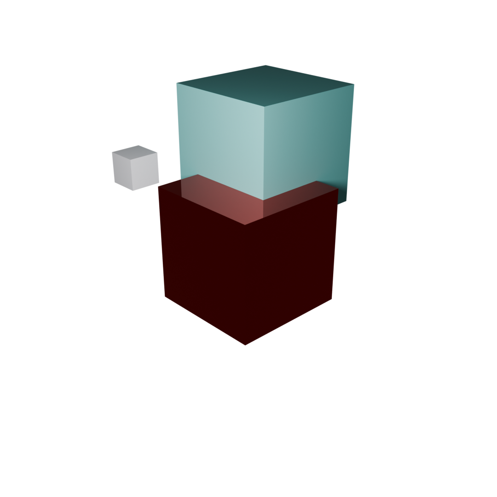

Combinations Rendering
üß™ Rendering Combinations (Plain Markdown)
The task is to render cars with different materials for each part and their corresponding combinations.
Even for just 3 different parts with different color options, this leads to:
p^(c₁ × c₂ × c₃) possible combinations,
where:
-
p is the number of different parts
-
cₙ is the number of materials that part can have
Example:
For Car Body, Rims, and Lights, each with 3 different materials, this already leads to trillions of combinations:
3^(3 × 3 × 3) = 3^27 = 7,625,597,484,987
Solving the Problem
Because of this we are not rendering each combination individually we only render each single part with each combination and combining them in post.  This way we still render the same amount of pixels but we can remove redundant images if they do not affect each other. For example: if the rims change color the headlights don't need to rendered again. Now we can create dependency tables that show which part can affect the rendering of another part and which part can be rendered independently.
Dependency Tables
Each Part can be dependent on multiple other parts Each Part can be rendered by multiple cameras Each Camera can be rendered with multiple light Setups